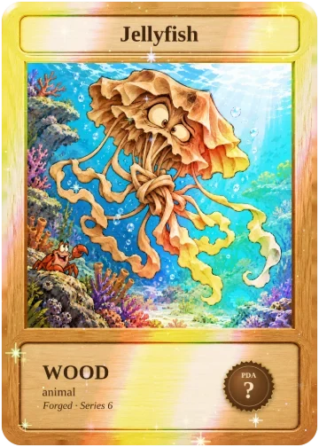
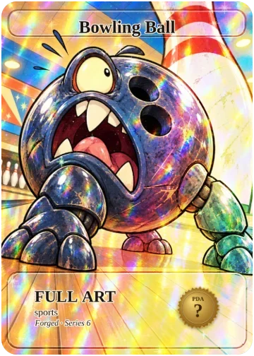
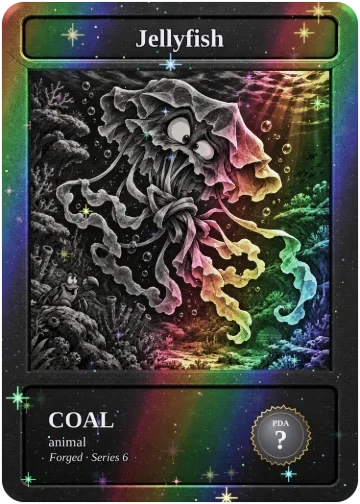
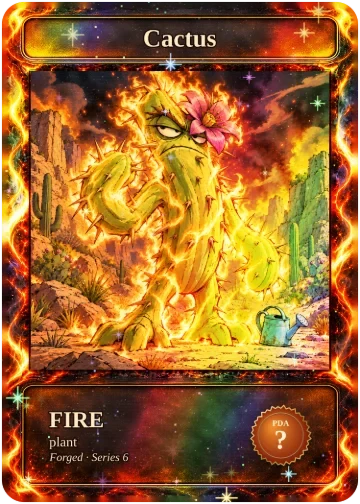
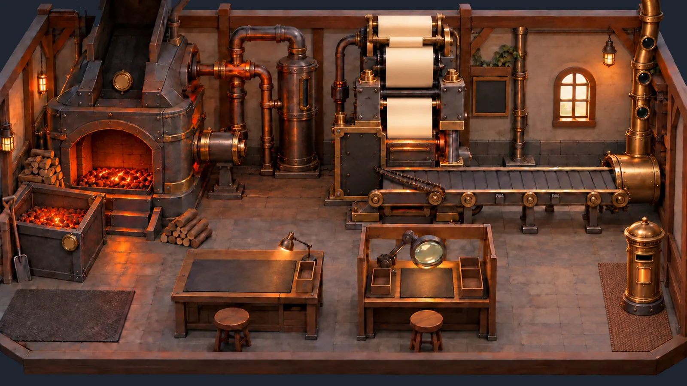

No. 1 · “Hard News, Every Morning” · Thursday, October 22, 2026 · Weather: New York 61°F, partly cloudy; chance of being told it's healthy.
MARKETS IN TURMOIL
Nation's Crypto Traders Spend Night Staring At Ceiling As Bitcoin Slips Below $81,000
"I'm fine," reports man lying on kitchen floor with phone balanced on chest
By Hunter S. Timber
AI PHOTO (to make)A man in a faded bathrobe lying flat on a cheap linoleum kitchen floor at 3 a.m., arms at his sides, staring at the ceiling; a smartphone face-down on his chest glows; an untouched bowl of cereal on the counter; a single fridge light; shot from above like a crime-scene photo, deadpan
A Tucson man assumes the national position at 3:12 a.m. Wednesday. Morning Wood Staff Photographer (AI)
NEW YORK — An estimated 400 million dollars in long positions were liquidated Wednesday as bitcoin slid below $81,000 and ether fell more than five percent, leaving millions of Americans awake at 3 a.m., lying perfectly still and staring at the ceiling in what experts are calling "the most coordinated national activity since the moon landing."
"I'm fine," said Tucson-area trader Brent Holcomb, 34, speaking from the floor of his kitchen, where he had lain down "for a second" at around 11 p.m. and had not since moved. "It's a healthy correction. I'm healthy. I'm correcting." At press time, Holcomb's phone, balanced face-down on his sternum, had vibrated 41 times, each one a notification from an app he described as "the casino, but it's educational."
Analysts blamed the slide on hot inflation data, an AI stock sell-off, oil above $111 a barrel and roughly $611 million leaving crypto funds in a single week, which one strategist summarised as "everything, basically, all at once, the way it always is, forever."
I was there, in the thick of it, in a motel off Exit 41 with eleven tabs open and a 25x long I had named Brenda. Brenda is gone now. They don't tell you how quiet it gets after the margin call — just the ice machine, the hum of the vending light, and a man in the next room whispering "buy the dip" to nobody, like a prayer, or a threat.
At press time, the nation's ceilings were reported to be holding firm, the only support level in America to do so.
PLANK
PLANK Holders Report Feeling 'Totally At Peace,' A Classic Early Sign Of Shock
Doctors urge community to keep holders warm, talking, and away from the chart
By Kurt Vonneplank

A PLANK holder, at peace, Wednesday. Cardworks Archive
PLANK holders across Robinhood Chain said Wednesday that they felt "great, honestly," "never better," and "weirdly calm, like a lake," statements that medical professionals immediately identified as the textbook early stage of shock.
"When a holder tells you they're at peace, you do not leave them alone," said one paramedic. "You wrap them in a blanket. You ask them simple questions. What's your name? What year is it? What did you pay for your PLANK? If they answer the third one, they're not in shock. They're in denial, which is worse, and incurable."
So it goes. Full coverage of the fish, the boy and the old houses on the PLANK and Markets pages.
WORLD
Oil Hits $111 A Barrel, Forcing Nation To Seriously Consider Walking Before Deciding Against It
By Mark Twine
HANNIBAL, MO. (by telegraph) — Brent crude climbed back above $111 a barrel this week, and Americans responded with the old courage: they looked at the bicycle in the garage for a long moment, said "huh," and drove to the store to think about it.
A man will walk a mile for a principle, but only if the principle has parking. — M.T.
ANNOUNCEMENT
Morning Wood Debuts On Worst Possible Day, Calls Timing 'Journalistically Perfect'
By The Editors
The Morning Wood published its first issue Wednesday, launching on the exact morning crypto fell four percent, which the editors described as "a gift." "No one has ever needed a laugh and a newspaper more than a man lying on his kitchen floor," said the paper's editor-in-chief. "Except possibly the kitchen floor." The paper costs one PAPER and a nickel, comes out every morning, and is available for 24 hours, after which it is gone forever, like your long.
NATION
Chiricahua Named 64th National Park; Rocks Say They Honestly Assumed They Already Were One
By Mark Twine
The rocks, which have been standing there for twenty-seven million years, said they were "glad, sure," but "would have appreciated a heads-up before the gift shop."
SATIRE
PLANK
THE VIEW FROM THE MILL
PLANK falls again, and the Tralfamadorians would like everyone to calm down
Beings who see the whole chart at once describe it as "a nice chart, mostly"
By Kurt Vonneplank

A PLANK holder opens the chart, 3:12 a.m. Cardworks Archive
Listen: PLANK went down again yesterday. It moved −11.6% in a day, which is the kind of number that makes a grown man say "it's fine" in a voice that is not fine. A PLANK now costs $0.00000000094. That is less than a penny. It is less than a penny's opinion of itself.
I asked the Tralfamadorians about it. The Tralfamadorians can see the whole PLANK chart at once, from the launch to the heat death of the universe, the way we can see a stretch of the Rocky Mountains. They told me it was a nice chart, mostly. They said the red parts only look terrible if you happen to be standing in them.
"Where should I stand?" I asked them.
"Somewhere with snacks," they said.
Here is what I know. There are 611 people holding PLANK, and every one of them, at some point last night, opened the chart, closed it, opened it again, and texted somebody "you up?" for reasons that had nothing to do with romance. That is a community. That is more than most churches can say.
Meanwhile 61,000,000,000 PLANK went to the dead address in a single day. So it goes. The ones that are left are a little more precious, the way people get more precious when you notice there aren't so many of them. Hi ho.
I went into the PLANK pool at 3 a.m. and came out a changed liquidity provider
A dispatch from the deep end
By Hunter S. Timber
ROBINHOOD CHAIN, THE WETH/PLANK PAIR — 3:04 A.M. The pool was dark and warm and full of strangers. Somewhere on the far side a whale was rebalancing, and every time it moved, the whole surface shook like a waterbed in an earthquake motel, and a little man with a sniper bot would dart out from under the diving board and take eleven cents and vanish.
I had come to provide liquidity. Nobody provides liquidity at 3 a.m. for the yield. You do it for the same reason a man walks into the sea in a novel: to find out what he's made of. I was made, it turns out, of impermanent loss.
Fear: that the pool is just me and the whale. Loathing: for the whale, who has never once said hello.
OBITUARY
Free Gas On Robinhood Chain, aged ninety days
By Edgar Allan Pine
Born on the first of July, of a launch party and a press release; died in the last days of September, of a calendar. Free Gas was the most beloved resident of Robinhood Chain — generous, open-handed, beautiful, and, like all beautiful things, temporary, as the fine print had always, always said.
In those golden days a man could swap a memecoin for another memecoin forty times before breakfast and pay nothing but his dignity. Eighty percent of all the chain's trading, they say, was memecoins then. Then. Ah, distinctly I remember: it was in the bleak September.
Survived by Gas, its stern and expensive brother, who has moved into the house and changed the locks. In lieu of flowers, the family asks that you stop sending transactions "just to see."
And Liquidity, my raven, perched upon the gas tracker, croaked the only word it knows. — E.A.P., from the Furnace Room
Area holder faces difficult choice
By Staff
Two ButtonsSell PLANKTell everyone you're still holding PLANKMe, at 3 a.m.
Sweating man unable to choose between selling PLANK and announcing he still holds it Imgflip / The Morning Wood
Sources confirm he chose the third button, "post the chart with no comment," which is not a button.
SATIRE
Tang Gang
THE VICIOUS CIRCLE
Our hostess holds a four-hour Space, achieves nothing, beautifully
Society notes from the salon, where the roadmap is a circle and so is everything else
By Dorothy Parquet
AI PHOTO (to make)A tiny community-hall stage at midnight, one folding chair under a single spotlight, a microphone on a stand still switched on, an acoustic guitar leaning on the chair, rows of empty chairs, paper streamers half fallen down, a hand-lettered banner reading nothing, melancholy and funny
The salon convened at nine o'clock, as it does every Tuesday, and every Wednesday, and on any evening the chart has done something that requires explaining, which is every evening. Our hostess, @OrangeGooey — the largest account in the Tang Gang, co-father of PLANK, and the only man alive who can hold four hundred people in a room for four hours without once saying anything they could be held to — opened proceedings with "gm" at 9:04 p.m. That tells you most of what you need to know about time in this community.
Forty minutes were devoted to the roadmap. I have seen the roadmap. The roadmap is a circle. It is a very good circle; one could set a watch by it, if one's watch also went nowhere.
@Degen_Waffle, PLANK's other father, was invited to the stage and arrived, as he always arrives, with his guitar. He performed an original composition, "Red Candle Blues (Long Wick Version)", in a key I can only describe as post-liquidation minor. It was genuinely lovely. Three listeners wept. Two were holders; the third has simply been in the Space since 2023 and no longer knows how to leave.
@toospooky — who some say founded the Tang Gang, and who built the very machinery the Paper Press runs on — took the floor to remind everyone he was "early to everything except PLANK." He came to PLANK the way a cat comes to a door: long after everyone else had walked through it, loudly insisting the door was his idea. He then explained the Paper Press to the two men who launched PLANK, who nodded the way men nod at their own weddings.
@Bullish0xCrypto, the Gang's chief developer and a retired millionaire, joined "from the water" and fixed a bug live while four hundred of us listened to the wind across his microphone. Asked when he would stop working, he said he already had. Asked what he'd retired from, he went quiet. That, darling, is a love story.
And then there is the owner of this newspaper, @ThiccLiquidity, who unmuted at 11:58 p.m. to announce "something big," his fourth something big this month, then muted himself, presumably to go and find out what it was. The staff of The Morning Wood have been asked to say nothing unkind about the owner. We have read our contracts very carefully. There is no such clause.
Seen and Heard
@bflo14 posting a meme so precise that three people sold and one bought out of pure respect.
@GeneralDeeez saluting from the back row. Rank unconfirmed. Salute impeccable.
@ZabethOnChain, @chiographer and @FLEXicanPapa saying more in three emojis than the stage said in four hours. @Grizzle341 and @chubzxmeta, lurking with intent.
They told me PLANK would set me free;they told me hold and pray.I'm free from all my savings now —so that part worked, I'd say.
DEVELOPING
Retired Tang Gang developer ships hotfix from yacht, warns users to 'expect some chop'
By Dorothy Parquet

Our correspondent on the water, Wednesday. Cardworks Archive
@Bullish0xCrypto pushed an emergency fix early Wednesday from what witnesses described as "a boat, or a very wet office." Release notes read, in full: "fixed it. seas are rough. if you see a commit that says 'aaaaa' that was a wave." One cannot buy that kind of dedication. Apparently, one can only retire into it.
The owner, a portrait
By Staff
Is This A Pigeon@ThiccLiquiditya fourth "something big" tweetIs this a launch?
Man mistakes a butterfly labelled 'a fourth something big tweet' for a launch Imgflip / The Morning Wood
Published without the owner's approval, which we are told is the house style.
SATIRE
Crypto
FEAR AND LOATHING
Fear and loathing at $81,000
The Suits are selling, the Cathedral is buying, and the man in 14C says it's healthy
By Hunter S. Timber
AI PHOTO (to make)A roadside motel parking lot at 3 a.m., dozens of anonymous people in bathrobes and slippers standing in silence looking up at an enormous red neon arrow sign pointing downward, a flickering VACANCY sign, an ice machine, wet asphalt reflecting red light, cinematic, deadpan
Guests at a Motel 6 off Exit 41 observe the weekly low, Wednesday. Morning Wood Staff Photographer (AI)
MOTEL 6, EXIT 41 — 3:12 A.M. We were somewhere around $81,000 on the edge of the weekly low when the liquidations began to take hold. I remember saying something like "I feel a bit margin-called; maybe you should drive," and suddenly the sky was full of what looked like four hundred million dollars in long positions, all swooping and screeching and diving around the chart.
The Suits were selling again. You could smell it on the tape: six hundred and eleven million out the door in one week, most of it ether, most of it from the big black fund with the four-letter ticker that sounds like a sneeze. These are the people who told your grandmother crypto was safe now. They wear loafers without socks. They do not lose sleep. They lose your sleep, on your behalf, for a management fee.
Ether had it worst — down nine percent on the week, trading like a man who has just been told the party is at a different house. Somewhere a treasury company now holds nearly five percent of all of it and is presumably also lying on a kitchen floor.
And the Cathedral? The Cathedral bought 267 more bitcoin. Of course it did. The Cathedral has only one prayer and it is "more".
Fear: oil at $111, inflation running hot, and a Federal Reserve that looks at the economy the way a man looks at a smoke detector at 4 a.m. Loathing: for the man in seat 14C who said "it's just a healthy correction" while his phone buzzed itself off the tray table and into the aisle, where it lay face-down, like the rest of us.
INDEXES
MSCI moves to kick bitcoin treasury firms out of indexes; Strategy buys 267 more bitcoin out of spite
By Hunter S. Timber
NEW YORK — Index giant MSCI finalised rules this week that could exclude digital-asset treasury companies such as Strategy from its benchmarks, prompting Strategy to respond in the only language it has ever spoken. "You can remove us from the index," a company spokesperson did not say, "but you cannot remove the index from us, because we will buy it, in bitcoin, with money we borrowed against bitcoin."
BANKING
JPMorgan brings its deposit token to Ethereum after years of warning everyone about exactly this
By Hunter S. Timber
The nation's largest bank said it would put JPM Coin on Ethereum for institutional clients, completing a decade-long journey from "this is a fraud" to "this is a product" that industry observers called "the most traditional thing a bank has ever done." Meanwhile, the EU named USDC the first "significant" e-money token under MiCA, a title that comes with a certificate, a lanyard and roughly nine hundred pages of homework.
OBITUARY
A Long Position, aged nine hours
By Edgar Allan Pine
Once upon a midnight dreary, while I traded, weak and weary, over many a quaint and curious candle of forgotten lore — suddenly there came a margin call, as of someone gently tapping, tapping at my exchange door. "'Tis the funding rate," I muttered, "only this and nothing more." It was not only this.
Born at the open, of a man who had read one thread. Died at 3:12 a.m., of leverage, surrounded by four hundred million dollars of others who had read the same thread. Survived by a screenshot of the entry, which he will keep, and a wife, who will not keep him. In lieu of flowers, the family asks that you never, ever show her the screenshot.
Quoth the raven, Liquidity: "Nevermore." — E.A.P., from the Furnace Room
Ether holders issue joint statement
By Staff
This Is FineMe, 20x long ETHThe weekly candle
A cartoon dog sitting calmly in a burning room, labelled '20x long ETH' Imgflip / The Morning Wood
The statement was read aloud from inside the room.
SATIRE
Trending & World
POLITICS
Super PACs pass $400 million spent telling Americans who not to vote for
"Most money ever spent on a recommendation nobody asked for," says man on porch
By Mark Twine
AI PHOTO (to make)An ordinary American living room in the evening, a tired family on a beige sofa buried knee-deep in glossy political mailers, the television showing only a giant red X on a black background, a dog chewing a campaign flyer, a 1970s wire photo look, deadpan
A family in Maine is informed, for the ninth time Tuesday evening, that someone is bad. Morning Wood Staff Photographer (AI)
HANNIBAL, MO. (by telegraph) — Political action committees backed by the richest man in the world have now spent more than four hundred million dollars on advertising this election, while the President's own super PAC has spent a further thirty-four million attacking a Texas Democrat, bringing the total sum spent informing Americans that someone is bad to a figure larger than the economy of several countries that have never once been told who is bad.
In my day a man bought votes honestly, with whiskey, one at a time, and looked the voter in the eye while he did it. Today a voter in Maine can watch the same advertisement nine times in one evening and still not know which candidate it was against, only that the music was very worried.
Pollsters report the ads are working: 94 percent of Americans now say they are "against" something, and a growing number are against everything, which is the most united this country has been since the war.
There is no distinctly native American criminal class, save the consultants. — M.T.
CULTURE
Man who argued with pop star over autograph now the most famous person in his family
By Mark Twine
NEW YORK — A man filmed in a heated exchange with a pop star after asking for an autograph has, within a day, become the best-known member of his family, surpassing an uncle who once appeared in the background of a weather report. "We always said he'd make something of himself," said his mother, "and we were right, and it was this." The man reportedly still does not have the autograph, but now signs them himself.
Get your facts first, and then you can distort them on the general store's video channel. — M.T.
TECHNOLOGY
AI finds flaw in 70% of the world's websites; remaining 30% 'just as bad, it got bored'
By Mark Twine
A software flaw discovered by an artificial intelligence could affect seventy percent of the websites on Earth, researchers said, adding that the machine stopped looking at that point "out of what we can only describe as despair." The other thirty percent are said to be run by a man named Gary who has not updated anything since 2014 and is therefore, by accident, untouchable.
TRENDING
Couples choose song titled 'Patient Zero' for wedding videos, see nothing wrong with this
By Mark Twine
Fifty-three thousand couples and counting. Marriage, like a pandemic, starts with one person and gets into everything.
The American voter, Wednesday
By Staff
Drake Hotline BlingVotingWatching $400 million of ads about voting
Drake rejecting 'voting' and approving 'watching $400 million of ads about voting' Imgflip / The Morning Wood
SATIRE
Markets
THE MARKET REPORT
The fish was down by morning
A report from the river
By Ernest Hemingwood

The market, Wednesday. Cardworks Archive
The fish had moved −11.6% by morning. It was a good fish and it had been down before. The men at the pool watched it the way men watch a fire that has decided to go out, and nobody said anything, and somebody bought a little, and then somebody sold more than that, and the sun came up over the liquidity like it did not know.
There was $133,000 in the pool. It was not deep water. It was the kind of water a boy can stand up in, if he is tall and not afraid. $18,450 changed hands. Nobody came to the river who did not have to.
The boy did what the boy always does. He followed the fish. PAPER traded at $0.000412, −7.3% on the day, on $3,120 of volume, which is not much volume, and is not nothing. 1,312 people hold the boy. They do not talk about it in town.
In the old houses the mills sat quiet. There are 9,310 of them still standing. Each one holds $83.51 of the fish in its belly. Nobody was selling the old houses. You do not sell the house you were born in. You just stop calling.
In the North the Old Man was at $81,176, −4.0%, and his brother ether at $2,377, −5.4%. They are old and they are big and they drag the whole sea behind them when they go down. It is not their fault. It is only their size.
The Catch: 3,311.2 PAPER, gone to the dead address before breakfast. It did not struggle. They never struggle at the end. It was clean and it was true and it will not be coming back, and that is the only promise this market has ever kept.
Price
24h
Volume
Liquidity
Burned
Holders
PAPER
0.000412
-7.3%
3120
41200
1840221.5
1312
PLANK
9.4e-10
-11.6%
18450
133000
4120000000000
611
Paper Mills
9310 live · 1204 holders · backing $83.51 per mill
SAMPLE NUMBERS — not real market data
SATIRE
The Back Page
EDITORIAL
On the first morning
By Kurt Vonneplank

The Morning Wood newsroom, shortly before deadline. Cardworks Archive
Listen: we made a newspaper. Nobody asked us to. That is how all the best things get made — children, music, and bad decisions at 3 a.m. — and most of the worst ones too.
It comes out every morning. It costs one PAPER and a nickel. You can read it for one day, and then it is gone, the way every day is gone, the way your long position is gone. So it goes. If you are holding this copy, you were here, on the first morning, which is more than the Tralfamadorians can say, because they were everywhere at once and therefore nowhere in particular.
Here is the only advice this paper will ever give you: be kind to the people in your Space. They are lonely and they are holding the same bag you are. God damn it, you've got to be kind. Hi ho.
CARTOON
The business plan
By Staff
Gru's PlanStart a newspaper in 2026Put it on the blockchainCall it The Morning WoodCall it The Morning Wood
Gru presenting a four-step plan; the last panel he realises it says 'Call it The Morning Wood' Imgflip / The Morning Wood
Letters
“Dear Editor, I have bought one copy and I will be telling everyone at church it is about lumber.” — Mrs. Hemingwood (staff mother) Ed.: It is about lumber. — Ed.
“Dear Editor, my son Hunter has not come home in four days. If he reads this: the car is not stolen if you bring it back.” — Mrs. Timber (staff mother) Ed.: He has the car. He says it's "in a position." — Ed.
“Is there a version of this newspaper without the name?” — Concerned Grandmother, Duluth Ed.: No. — Ed.
Classifieds
FOR SALE. One (1) bag of PLANK, heavier than when purchased. Emotional damage included at no extra cost. Serious buyers only; unserious buyers preferred.
WANTED. Exit liquidity. Must be patient, trusting and own a phone. Will train.
LOST. Seed phrase, last seen on a Post-it in a jacket I donated to Goodwill. Reward: half of what's on it, which is nothing unless you find it.
SERVICES. Will host your Twitter Space. Will not end it. Ask about our four-hour minimum.
MISSED CONNECTIONS. You: $81,000 support, steady, reliable. Me: a man who believed in you. You left Wednesday without a word. I'm still at the kitchen floor if you want to talk.
PERSONALS. Retired developer, owns boat, seeks a bug that only appears at 3 a.m. Must love water. No timewasters (the bugs are the timewasters).
Horoscopes
Aries: You will be tempted to open the chart. The chart will be tempted to open you. Only one of you will close.
Taurus: The stars say hold. The stars are made of gas, and gas is not free anymore. Think about it.
Gemini: Both of you were right. Both of you were also leveraged. So it goes.
Cancer: A man named Kilgore Trout will try to sell you a newsletter. He has nine subscribers. Be the tenth. It will mean everything to him.
Leo: You will host a Space today. Nobody will be able to leave. This is not a metaphor; check the button.
Virgo: Your spreadsheet balances perfectly. Your life does not. Add a column for that.
Libra: Sell your couch. Buy a different couch. Lie on the floor between them and feel the market.
Scorpio: Someone in the Tang Gang will play guitar at you. Let it happen. It is the closest thing to church most of you have.
Sagittarius: Travel is favoured, especially away from your phone, especially by boat, especially if the boat has no Wi-Fi.
Capricorn: Hard work pays off, eventually, to someone. The Tralfamadorians know who. They're not telling.
Aquarius: Something big is coming. You have heard this four times this month. On the fifth, it will be a newspaper.
Pisces: You are the fish. You have always been the fish. Swim, little fish. Hi ho.
Weather
New York 61°/48° partly cloudy — High of 61°F, partly cloudy; the wind on Wall Street will come in short, sharp, sell-side gusts.
London 64°/49° rain — Expect rain. The fog has been there so long it now has a seat in the House of Lords.
Tokyo 67°/50° clear — A high of 67°F; the only market in the world that is having a calm day, out of politeness.
Menlo Park 70°/51° fog — Low of 51°F; visibility poor, which is how the people there prefer it.